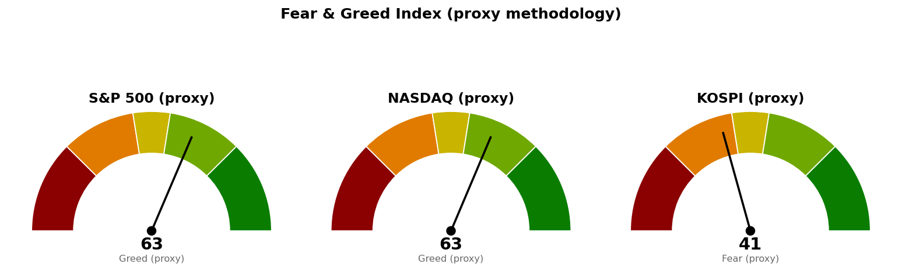

① 직전에 건 조건의 성적표 — 미국은 충족, 한국은 더 멀어졌고, 섹터 지목은 맞았습니다.
| 직전 리포트가 건 조건 | 판정 | 근거 |
|---|---|---|
| S&P 500 종가가 20일선 7,669.39 하회 시 관찰 단계 진입 | 충족 | 9/1 종가 7,631.47로 20일선(현재 7,665.78) 아래 마감. 하루 하락폭은 -54.67포인트로 하루 평균 변동폭의 0.86배입니다. |
| 코스피 50일선 6,930.62 종가 회복 전까지 신규 진입 관망 | 미충족 — 관망 유지, 거리는 더 벌어짐 | 9/2 종가 6,621.33(-3.14%). 50일선(현재 6,918.60)까지 +4.49% 올라야 하며, 직전에 이미 아래에 있던 데서 한 단계 더 내려왔습니다. |
| 니케이는 판단 근거가 얇아 결론 보류 | 하락으로 결론남 | 9/2 종가 64,473.16(-2.63%). 20일선 66,097.30 아래로 1.09배, 50일선 65,979.13 아래로 1.01배 떨어졌습니다. 하루 하락폭이 평균 변동폭의 1.17배로 네 시장 중 가장 큽니다. |
| 에너지(XLE)를 조정 시 관심 대상으로만 둠 | 지목이 맞았습니다 | 9/1 XLE +1.27%로 11개 섹터 중 1위. 사흘 연속 1위입니다. |
② 좌표의 이동 — 선은 거의 그대로이고, 가격이 선을 통과했습니다.
| 기준선 | 직전(9/1 리포트) | 현재 | 이동 |
|---|---|---|---|
| S&P 500 20일선 | 7,669.39 | 7,665.78 | -3.61 |
| S&P 500 50일선 | 7,575.84 | 7,578.02 | +2.18 |
| 코스피 50일선 | 6,930.62 | 6,918.60 | -12.02 |
| 니케이 20일선 | 66,268.26 | 66,097.30 | -170.96 |
직전 리포트의 핵심 관찰은 S&P 500과 20일선 사이 거리가 하루 평균 변동폭의 1.01배 → 0.27배로 좁혀졌다는 것이었습니다. 이번에는 그 거리가 위쪽 0.27배에서 아래쪽 0.54배로 넘어갔습니다. 기준선 자체는 3.61포인트밖에 움직이지 않았으므로 변화는 전부 가격에서 나왔습니다.
③ 판단의 방향은 같고, 근거의 성격이 바뀌었습니다.
행동 기준은 직전과 같은 신규 위험자산 확대 보류입니다. 바뀐 것은 두 가지입니다.
첫째, 직전 리포트는 "섹터는 금리 인상을 반영했는데 지수와 변동성은 반영하지 않았다"는 간극을 지적하고 "이번 주 둘 중 하나는 조정받는다"고 적었습니다. 그 간극은 지수가 내려오는 쪽으로 좁혀졌습니다. VIX(향후 30일 변동성 기대치)도 14.9에서 16.3으로 올라왔습니다.
둘째, 섹터 배치가 하루 만에 뒤집혔으므로 직전의 "금리 인상 반영" 해석은 이번 데이터로는 유지되지 않습니다. 직전에 가장 크게 밀렸던 유틸리티(-2.20%)가 이번에는 +0.78%로 2위가 됐고, 직전 2위였던 경기소비재(+0.61%)가 -1.72%로 꼴찌가 됐습니다. 자세한 내용은 아래 섹터 항목에 적었습니다.
미국은 9월 1일(화) 종가, 한국·일본은 9월 2일(수) 종가 기준입니다. 시점이 하루 다르므로 아시아의 큰 하락은 미국 9월 1일 장에 반영돼 있지 않으며, 반대로 미국 지수에는 9월 2일 아시아 흐름이 담겨 있지 않습니다.
| 지수 | 종가 | 등락 | 20일선 | 50일선 | RSI |
|---|---|---|---|---|---|
| S&P 500 | 7,631.47 | -0.71% | 7,665.78 (아래, 0.54배) | 7,578.02 (위, 0.84배) | 48.5 |
| 나스닥 | 26,099.77 | -1.03% | 26,209.90 (아래, 0.33배) | 25,994.09 (위, 0.31배) | 48.9 |
| 코스피 | 6,621.33 | -3.14% | 6,733.15 (아래, 0.34배) | 6,918.60 (아래, 0.89배) | 47.0 |
| 니케이 225 | 64,473.16 | -2.63% | 66,097.30 (아래, 1.09배) | 65,979.13 (아래, 1.01배) | 42.1 |
"아래, 0.54배"는 그 선 아래로 하루 평균 변동폭(ATR — 하루에 평균적으로 움직이는 가격 폭)의 0.54배만큼 떨어져 있다는 뜻입니다.
읽는 법: 네 시장 모두 20일선 아래로 내려왔습니다. 직전 회차에는 코스피만 50일선 아래였는데, 이제 코스피와 니케이 둘 다 50일선 아래입니다. 미국만 50일선 위에 남아 있고, 그 여유도 S&P 500 기준 하루 평균 변동폭의 0.84배, 나스닥은 0.31배에 불과합니다. 나스닥은 이번 주 안에 평균적인 하루 움직임만 더 밀려도 50일선을 시험하게 됩니다.
RSI(최근 상승폭과 하락폭의 비율을 0~100으로 나타낸 과열·침체 지표)는 미국 두 지수가 48.5·48.9로 50 바로 아래에 있습니다. 침체 판정 기준(보통 30)과는 거리가 멀어, 지금까지의 하락은 과매도 구간에 들어갈 만한 크기가 아닙니다. 반면 니케이는 42.1로 네 시장 중 가장 낮습니다.
| 섹터 (ETF) | 등락 | 직전(8/31) |
|---|---|---|
| 에너지 (XLE) | +1.27% | +2.04% |
| 유틸리티 (XLU) | +0.78% | -2.20% |
| 헬스케어 (XLV) | +0.66% | -0.36% |
| 필수소비재 (XLP) | +0.32% | -0.12% |
| 리츠 (XLRE) | -0.16% | -0.83% |
| 커뮤니케이션 (XLC) | -0.52% | +0.04% |
| 금융 (XLF) | -0.88% | -0.67% |
| 소재 (XLB) | -1.18% | -1.01% |
| 산업재 (XLI) | -1.37% | -2.05% |
| 기술 (XLK) | -1.53% | -1.12% |
| 경기소비재 (XLY) | -1.72% | +0.61% |
섹터 상대강도는 미국 SPDR 섹터 ETF 기준이며, 한국·일본은 지수 흐름만 제공됩니다.
주목할 점은 세 가지입니다.
첫째, 오른 네 섹터가 전부 방어 업종입니다. 에너지·유틸리티·헬스케어·필수소비재는 경기가 나빠져도 수요가 크게 줄지 않는 쪽이고, 내린 쪽 하위 세 자리는 경기소비재·기술·산업재로 경기와 실적 기대에 가장 민감한 업종입니다. 이 배치는 금리 방향보다 경기와 이익 기대에 대한 자금 이동으로 읽는 편이 데이터에 더 맞습니다.
둘째, 직전 회차의 해석은 이번 데이터로 유지되지 않습니다. 직전에는 유틸리티·산업재·리츠가 하위권에 몰린 것을 금리 상승 반영으로 적었는데, 이번에는 유틸리티가 -2.20%에서 +0.78%로, 리츠가 -0.83%에서 -0.16%로 올라왔습니다. 금리 민감 업종이 회복하면서 경기 민감 업종이 밀렸으므로 같은 설명으로는 두 날을 함께 설명할 수 없습니다. 하루 등락으로 성격을 단정하지 않되, 직전 해석을 그대로 끌고 가지 않는다는 점을 분명히 적습니다.
셋째, 에너지는 세 잣대에서 연속 1위입니다. 직전 회차는 RSI 기준과 하루 등락 기준에서, 이번에는 다시 하루 등락 기준에서 1위입니다. 아래 유럽 물가 뉴스가 그 배경을 설명합니다.
왜 중요한가: 두 가지를 동시에 설명합니다. 하나는 에너지 섹터의 사흘 연속 1위입니다. 물가를 밀어올리는 원인이 에너지 비용이라면 그 비용은 에너지 기업의 매출입니다. 다른 하나는 긴축 압력이 연준 하나가 아니라 여러 중앙은행에서 동시에 나오고 있다는 점입니다. 같은 날 헤드라인에는 호주 2분기 성장률이 2.1%로 예상을 웃돌아 호주 중앙은행이 긴축을 이어갈 여지가 생겼다는 소식도 함께 올라왔습니다. 미국 금리만 보는 시각으로는 아시아 증시의 하락 폭을 설명하기 어렵습니다.
왜 중요한가: 이 발표일(9월 4일)이 위 무효화 기준의 경고 단계 판정일과 정확히 같은 날입니다. 더 중요한 것은 기준선의 높이입니다. 5만 명은 낮은 기준인데도 확률이 반반입니다. 고용이 강하면 긴축 논거가 굳고, 약하면 오늘 섹터 배치가 가리키는 경기 둔화 쪽이 확인됩니다. 어느 쪽으로 나오든 그날 종가로 S&P 500이 7,665.78을 되찾는지가 판정 지점이며, 발표 전에 방향을 미리 정해 포지션을 늘릴 근거는 이 숫자에 없습니다.
왜 중요한가: 두 기사를 붙여 읽어야 의미가 나옵니다. 수요는 나빠지지 않았습니다 — 델은 수주잔고 950억 달러에 전망을 올렸고, 팔로알토는 실적이 예상을 넘겼습니다. 그런데도 기술 섹터는 -1.53%로 하위 두 번째입니다. 즉 이번 하락은 실적이 꺾여서가 아니라 같은 이익에 시장이 매기는 값이 낮아진 데서 나오고 있습니다. 이 구분이 실무에서 중요한 이유는 대응이 정반대이기 때문입니다. 실적이 꺾이는 하락은 보유 근거가 사라진 것이고, 매기는 값이 낮아지는 하락은 금리와 심리가 되돌아오면 함께 되돌아옵니다. 다만 되돌아오는 시점을 알 수 없으므로 지금 사서 기다릴 근거는 아니며, 위 무효화 단계가 진행되면 값이 더 낮아지는 구간이 이어질 수 있습니다.
*수집한 헤드라인 279건 중 순위 상위 10건에서 위 3건을 골랐습니다. 이번 조회에서 한국 증시 -3.14%, 일본 증시 -2.63% 하락의 원인을 특정해 짚은 기사는 상위 10건에 없었습니다. 일본 매도세가 광범위했다는 사실은 개별 종목 기사(이토엔 +8%)를 통해 간접 확인될 뿐입니다. 아시아 하락의 원인을 추정해서 적지 않습니다.*
아래 점수는 공포·탐욕 지수를 대체 방식으로 추정한 값(프록시)입니다. 원본 지수를 그대로 받아온 것이 아니라 모멘텀·RSI·변동성·안전자산 선호 네 항목을 합쳐 0~100으로 환산한 것이며, 0에 가까울수록 공포, 100에 가까울수록 탐욕입니다.

| 시장 | 점수 | 판정 | 직전(9/1) |
|---|---|---|---|
| S&P 500 | 62.8 | 탐욕 | 67.7 |
| 나스닥 | 62.7 | 탐욕 | 69.2 |
| 코스피 | 41.4 | 공포 | 40.4 |
미국 점수는 두 회차 연속 내려왔습니다(67.7 → 62.8). 그런데 성격은 직전과 같습니다 — S&P 500 점수를 가장 크게 끌어올린 항목이 여전히 변동성 83.6 → 78.9로 가장 높고, 방향성을 재는 모멘텀 66.1·RSI 48.5보다 위에 있습니다. VIX가 14.9에서 16.3으로 올랐지만 눈금 10~40 안에서는 여전히 낮은 쪽입니다.
즉 미국의 탐욕 판정은 상승 확신이 아니라 "큰 일은 없을 것"이라는 낮은 변동성 전망에서 계속 나오고 있으며, 지수가 20일선을 내주고 아시아가 3% 넘게 빠진 뒤에도 그 전망은 크게 바뀌지 않았습니다. 직전 리포트는 이 간극 중 하나가 조정받는다고 적었고, 지수 쪽이 먼저 움직였습니다. 변동성 쪽은 아직 남아 있습니다.
향후 5일 이내로 확정된 발표 일정입니다.
| 날짜 | 발표 | 왜 이번 주에 중요한가 |
|---|---|---|
| 2026-09-03(목) | 주간 신규 실업수당 청구건수 | 고용지표 중 가장 빨리 나오는 항목입니다. 다음 날 결과의 방향을 미리 가늠하는 데 쓰입니다. |
| 2026-09-04(금) | 비농업 고용자수 · 실업률 (고용 상황 보고서) | 경고 단계 판정일과 같은 날입니다. 9월 1일 이탈 후 3거래일(9/2·9/3·9/4)의 마지막 날이며, 이날 종가로 S&P 500이 20일선 7,665.78을 되찾지 못하면 경고 단계로 올립니다. 위 2번 뉴스대로 시장은 이 발표를 반반으로 보고 있습니다. |
9월 FOMC 회의 날짜는 이번 조회 범위(5일 이내)에 들어오지 않아 표에 담기지 않았습니다. 날짜를 임의로 적지 않습니다.
행동 기준은 직전과 같은 신규 위험자산 확대 보류이며, 단계만 관찰로 올랐습니다. 보유분을 정리하라는 뜻이 아니라 비중을 늘릴 자리가 아니라는 의미입니다.
*본 자료는 투자자문이 아니라 참고 정보입니다. 미국 수치는 2026년 9월 1일 종가, 한국·일본 수치는 2026년 9월 2일 종가 기준입니다. 투자 판단과 그 결과에 대한 책임은 투자자 본인에게 있습니다.*